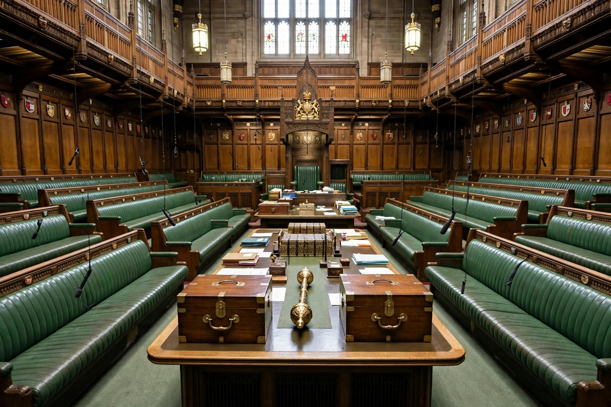

The Official Opposition, formally His Majesty's Most Loyal Opposition, is the largest political party in the House of Commons that is not in government. Its leader is the Leader of the Opposition, and it forms a Shadow Cabinet that mirrors the government's ministers.
The concept of a loyal opposition — opposing the government while remaining loyal to the Crown and the constitution — developed in the 18th and 19th centuries and was given statutory recognition by the Ministers of the Crown Act 1937, the first legislation to define the Leader of the Opposition and provide a salary. The Official Opposition receives dedicated time in Parliament: twenty "opposition days" per session in the Commons on which it chooses the subject of debate, and priority at Prime Minister's Questions. It also receives public funding ("Short money") to support its parliamentary work.
Since the early 20th century the Official Opposition has almost always been either the Conservative Party or the Labour Party, whichever is not in power. Notable exceptions include the period of the National Governments in the 1930s and the Liberal Democrats' role after 2024 returned the Conservatives to opposition following Labour's election victory.
See also: Leader of the Opposition, Shadow Cabinet, Westminster system.